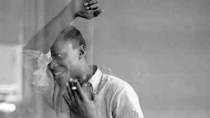

Biogrāfija
Mailzs Deiviss (Miles Davis, 26.05.1926-28.09.1991) bija amerikāņu trompetists un komponists. Viņš tiek dēvēts par vienu no divdesmitā gadsimta ietekmīgākajiem mūziķiem, kurš devis nozīmīgu ieguldījumu vairāku džeza virzienu attīstībā, kā arī sarakstījis virkni joprojām populāru džeza kompozīciju (tostarp, "So What", "Blue in Green" un "Milestones"). M.Deivisam piedēvēti arī būtiski nopelni citu džeza mūziķu atklāšanā, tā kā viņa vadītajos ansambļos karjeru sākuši un pēcāk pirmo atzinību ieguvuši arī vairāki citi plaši pazīstami instrumentālisti, tostarp – Džons Koltreins, Hērbijs Henkoks un Veins Šorters.

Daiļrade
M.Deivisam raksturīgs izteikts melodiskums un improvizācija, kas efektīgi izmanto salīdzinoši nelielu skaitu nošu. Tomēr par viņa skanējuma spilgtāko elementu uzskatāms rezignēts tonis, kas panākts, meistarīgi izmantojot elpošanas tehnikas kombinācijā surdīni. Šī iemesla dēļ mēdz teikt, ka M.Deivisa trompete skan kā "aizsmakusi".
Atšķirībā no laikabiedriem, M.Deiviss izvairījās no piesātinātām, harmoniski sarežģītām improvizācijām, tā vietā cenšoties radīt savām solo partijām melanholisku, vientulīgu noskaņu. Pats mūziķis savu stilu raksturojis šādi:
"Es nespēlēju to, kas mūzikā jau ir. Es spēlēju to, kā tur nav."
M.Deiviss tiek uzskatīts par pamatlicēju vismaz četriem džeza novirzieniem:
- Kūldžezs (cool jazz), kam bija vieglāks un vidusmēra klausītājam draudzīgāks skanējumu nekā tolaik populārajam bībopam.
- Modālais džezs ar tam raksturīgo izteikti melodisko improvizācijas formu.
- Postbops: džeza virziens, kas apvienoja ekspresīvu improvizāciju ar avangardiskāku kompozīciju.
- Fusion jeb džezs ar lielu rokmūzikas ietekmi.
Nozīmīgākie ieraksti
Karjeras laikā M.Deiviss piedalījās vairāk nekā 300 ierakstu tapšanā, no kuriem 61 ir viņa paša vadīto instrumentālistu sastāvu studijas albumi. Tiem, kuri vēlas iepazīt trompetistu visā viņa stilistiskajā daudzveidībā, iesakāms sākt ar šiem pieciem:
- Round About Midnight (1957)
- Porgy & Bess (1959)
- Kind of Blue (1959)
- In a Silent Way (1969)
- Bitches Brew (1970)
Ieskatu M.Deivisa daiļradē un spēles stilā sniedz arī šīs koncertieraksts: